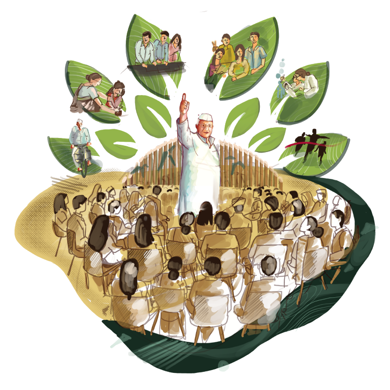

Social Responsibility
Community Progress Backed By Environmental, Healthcare, And Livelihood Action.
Sanjivani Spirits extends its responsibility beyond manufacturing through environmental care, healthcare support, and rural livelihood creation. These initiatives are built to create long-term value for communities around the organisation.

Why It Matters
Responsible Growth Has To Reach The Ground.
The organisation's social responsibility efforts focus on practical community outcomes: greener surroundings, stronger access to healthcare, and better livelihood opportunities for women and rural youth.
Each initiative is built around measurable action, from annual plantation drives and water conservation to healthcare delivery and employment-linked skill development.
Water Conservation
Water conservation projects are undertaken to preserve vital water resources and support the long-term needs of surrounding communities.
Rural Healthcare Reach
Mobile medical van services help take healthcare support into rural areas where timely medical assistance is often needed most.
Core Initiatives
Three Areas Of Community Action.
The content below brings together the organisation's major social responsibility efforts exactly around the themes of environment, healthcare and welfare, and education-led employment.
Environmental Initiatives
The organization is dedicated to nurturing the environment by planting 1 lakh trees annually, contributing significantly to reforestation efforts and combating climate change.
- Annual tree plantation helps build long-term green cover.
- Water conservation projects focus on preserving vital community water resources.
Healthcare & Welfare
In response to health crises, particularly the COVID-19 pandemic, the organization established a 450-bedded COVID Care Center to provide essential medical support to those affected.
- Mobile medical van services help extend healthcare access into rural areas.
- Support reaches communities where medical assistance is needed most.
Education & Employment
The organization promotes education and employment opportunities, with a strong focus on women's empowerment through textile clusters that help women build valuable skills and gain financial independence.
- Over 1000 rural youth have been employed through call centres.
- Stable job opportunities contribute directly to local economic growth.
Impact At A Glance
Numbers That Reflect Ongoing Commitment.
Next Step
Contact Us
Connect With The Team Behind The Wider Sanjivani Spirits Journey.
For business conversations, institutional outreach, or further information, head to the contact page.